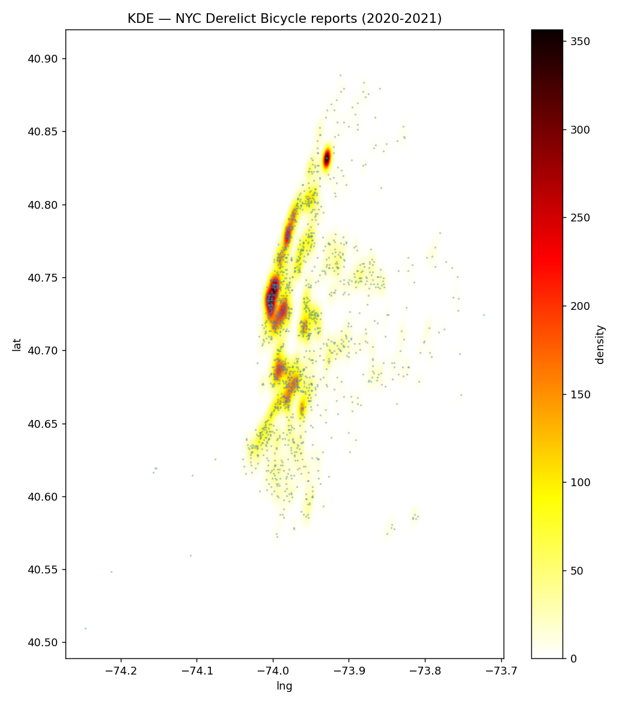
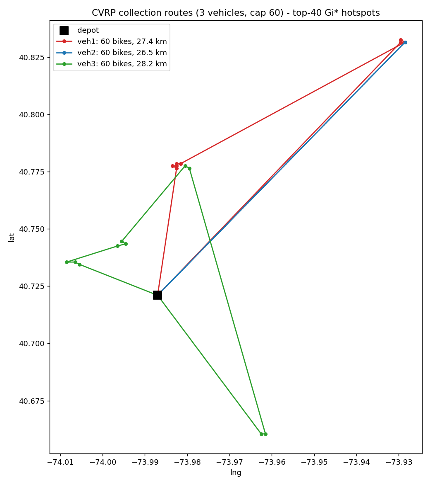

BikeReclaim
버려진 자전거를 사진 한 장으로 신고하면, 앱이 수학으로 최적의 수거 경로를 계산해
관리자에게 알려주는 서비스입니다.
1 어떤 문제를 풀고 싶었나
아파트 자전거 보관대, 학교 앞, 골목길 — 어디에나 주인 잃은 자전거가 방치되어 있습니다.
방치 자전거는 통행을 방해하고, 도시 미관을 해치고, 재활용될 수 있는 자원을 낭비합니다. 특히 제주 국제학교 단지처럼 졸업·이사 시즌마다 자전거가 한꺼번에 버려지는 지역에서는 문제가 주기적으로 반복됩니다.
기존 방식의 문제점은 크게 4가지입니다:
| 문제 | 설명 |
|---|---|
| 신고가 흩어짐 | 전화·민원 게시판 등으로 제각각 접수되어 한눈에 관리가 안 됨 |
| 중복 신고 | 같은 자전거를 여러 사람이 신고해도 구분할 방법이 없음 |
| 비효율적인 수거 | 수거 차량이 감으로 돌아다녀서 기름과 시간을 낭비 |
| 처리 현황 불투명 | 신고한 사람은 처리가 됐는지 알 수 없음 |
BikeReclaim은 이 4가지를 앱 하나로 해결합니다.
2 앱이 작동하는 전체 흐름
일반 사용자(초록 번호)와 관리자(검정 번호)의 역할이 이어달리기처럼 연결됩니다.
3 화면으로 보는 BikeReclaim
디자인은 딥그린(#1B7742)과 화이트를 기본으로, 공공 서비스답게 깔끔하게 만들었습니다.
👤 일반 사용자 화면

로그인 화면

지도 탭

신고 작성 화면

위치 검색 화면

내 신고 목록
🛠 관리자 화면

검토 탭

작업 탭

수거 동선 지도 (①→②→③ 번호 핀 + 점선 경로)
4 시스템 구조 — 세 조각으로 이루어진 앱
"모든 걸 직접 만들지 말고, 잘하는 도구에게 맡기자"가 설계 원칙입니다.
| 조각 | 역할 | 왜 이걸 골랐나 |
|---|---|---|
| Flutter 앱 | 사용자가 보는 모든 화면 | 코드 하나로 안드로이드/아이폰 둘 다 만들 수 있음 |
| Supabase | 데이터 저장, 로그인, 사진 보관, 권한 관리 | 서버를 직접 만들지 않아도 데이터베이스(PostgreSQL)를 앱에서 바로 쓸 수 있음. 위치 계산 기능(PostGIS)이 내장 |
| 최적화 서버 (FastAPI) | 경로 계산 + 카카오 API 중계 | 경로 최적화 도구(OR-Tools)가 파이썬용이라 이 부분만 작은 서버로 분리. 파일 7개짜리 초소형 |
5 핵심 로직 4가지 — 쉽게 풀어보기
① 수거 경로 최적화 (CVRP) ⭐ 가장 중요한 기술
문제: "수거할 자전거가 10군데 있다. 트럭은 20대까지 실을 수 있고, 4시간 안에 돌아와야 한다. 어떤 순서로 돌면 가장 짧은 거리로 끝날까?"
이건 수학에서 유명한 차량 경로 문제(CVRP, Capacitated Vehicle Routing Problem)입니다. '외판원 문제'의 확장판인데, 지점이 10개만 되어도 가능한 순서가 362만 가지가 넘어서 사람이 일일이 비교할 수 없습니다. 그래서 구글이 만든 최적화 라이브러리 OR-Tools로 풉니다.
우리 앱이 고려하는 조건:
| 조건 | 의미 |
|---|---|
| 적재량 | 트럭에 실을 수 있는 자전거 수를 넘지 않게 |
| 작업 시간 | 이동 시간 + 지점마다 걸리는 작업 시간의 합이 근무 시간을 넘지 않게 |
| 우선순위 | 급한 신고(통행 방해 등)는 되도록 먼저 포함 |
| 방문 분할 | 한 곳에 자전거가 트럭 용량보다 많으면, 여러 번 나눠 방문 |
| 이월(넘기기) | 오늘 다 못 담으면, 덜 급한 지점은 자동으로 다음으로 미룸 |
앱에서 관리자가 "경로 생성"을 누르면 → 서버가 이 계산을 몇 초 안에 끝내고 → 방문 순서·예상 시간·이월 목록을 돌려줍니다.
② 중복 신고 자동 탐색
같은 자전거를 두 사람이 신고하면 관리 데이터가 엉킵니다. 그래서 신고를 제출하기 직전, 데이터베이스에 이렇게 물어봅니다:
"이 좌표에서 반경 30m 안에, 아직 처리 중인 신고가 있니?"
이 계산은 데이터베이스에 내장된 지리 기능(PostGIS의 ST_DWithin 함수)이 담당합니다.
지구가 둥글다는 것까지 고려해서 두 좌표 사이 실제 거리를 재주는 함수입니다.
가까운 신고가 발견되면 사용자에게 "이미 신고된 자전거일 수 있어요"라고 안내하고,
관리자 화면에서도 같은 기능으로 중복을 골라낼 수 있습니다.
③ 좌표 ↔ 주소 변환과 장소 검색 (그리고 보안)
GPS가 주는 것은 33.3061, 126.2864 같은 숫자입니다. 사람에게는
"제주시 한경면 저지리 산 37-13"이 훨씬 읽기 좋죠. 이 변환(역지오코딩)과
"강남역" 같은 장소 검색은 카카오 API를 씁니다.
여기서 중요한 보안 원칙: 카카오 API를 쓰려면 비밀 열쇠(API 키)가 필요한데, 이 키를 앱 안에 넣으면 앱을 뜯어본 사람이 훔쳐 갈 수 있습니다. 그래서 키는 우리 서버에만 두고, 앱은 서버에게 "이 좌표 주소 좀 알려줘"라고 부탁하는 구조(프록시)로 만들었습니다.
④ 권한 관리 — 데이터베이스가 직접 지킨다 (RLS)
일반 사용자가 남의 신고를 지우거나, 자기를 관리자로 승격시키면 안 되겠죠. 보통은 서버 코드에서 검사하지만, 우리는 데이터베이스 자체에 규칙을 새겨 넣는 방식(RLS, 행 수준 보안)을 썼습니다.
| 행동 | 일반 사용자 | 관리자 |
|---|---|---|
| 신고 보기(지도) | 가능 | 가능 |
| 신고 만들기 | 본인 이름으로만 | 가능 |
| 승인/반려/수거 처리 | ❌ 불가 | 가능 |
| 수거 작업·재고 관리 | ❌ 불가 | 가능 |
| 자기 등급 바꾸기 | 둘 다 ❌ — 운영 콘솔에서만 가능 | |
규칙이 데이터베이스에 있으니, 설령 앱에 실수가 있어도 데이터 자체가 뚫리지 않습니다.
6 데이터는 어떻게 저장되나
엑셀 시트 5장이 서로 연결되어 있다고 생각하면 쉽습니다.
| 테이블 | 담는 것 | 비유 |
|---|---|---|
| profiles | 사용자와 등급(일반/관리자) | 회원 명부 |
| reports | 신고 1건의 모든 것 — 사진, 좌표, 주소, 상태, 설명 | 신고 접수 대장 |
| collection_jobs | 수거 작업 1회 — 차량 조건, 총거리, 예상 시간 | 배차 일지 |
| job_stops | 작업의 방문 순서 — 몇 번째로 어디를 가는가 | 배달 순서표 |
| bikes | 수거된 자전거 재고 — 보관/수리/기부/재사용/폐기 | 창고 재고 장부 |
신고(reports)의 상태는 이렇게 흘러갑니다:
7 만들기 전에 검증부터 — NYC 공공데이터 실험
"이 방법이 진짜 통할까?"를 앱을 만들기 전에 실제 데이터로 확인했습니다.
제주에는 아직 방치 자전거 데이터가 없어서, 뉴욕시의 311 민원 공공데이터 (방치 자전거 신고 2,930건, 2020~2021)로 세 가지 방법을 미리 실험했습니다.
| 실험 | 방법 | 결과 |
|---|---|---|
| 핫스팟 분석 | KDE(밀도 지도) + Getis-Ord Gi*(통계적으로 의미 있는 밀집 지역 찾기) | 브롱크스의 한 지점(신고 94건)이 최상위 핫스팟으로 검출 — "어디에 몰리는지"를 자동으로 찾을 수 있음을 확인 |
| 수거 경로 최적화 | OR-Tools CVRP, 트럭 3대 × 용량 60대 | 총 82.1km로 180대 수거 경로 생성. "대형 지점은 나눠 방문, 초과분은 이월"이라는 실전 규칙을 이 실험에서 발견해 앱에 반영 |
| 계절성 분석 | 월별 신고량 추이 | 여름 피크(6월 평균 187건) / 겨울 저점(12월 81건) — 시즌 예측이 가능함을 확인. 제주의 '졸업 시즌'에 응용 예정 |


8 어떻게 만들었나 — 개발 과정과 도구
| 단계 | 한 일 |
|---|---|
| 0. 검증 | NYC 공공데이터로 핵심 방법론(핫스팟·경로 최적화·계절성) 실험 |
| 1. 기획 | 기획안 작성 — 역할 2개(일반/관리자), MVP 완료 기준 10단계 정의 |
| 2. 백엔드 | Supabase에 테이블 5개 + 보안 규칙(RLS) + 중복 탐색 함수 구축 |
| 3. 앱 | Flutter로 사용자·관리자 화면 개발, 카카오맵 연동 |
| 4. 최적화 서버 | Python(FastAPI)에 OR-Tools 경로 계산 + 주소/검색 중계 구현, 자동 테스트 3종 |
| 5. 디자인 | Claude Design으로 시안 4장 제작 → 색·모양·간격을 코드에 그대로 이식 |
| 6. 검증 | 에뮬레이터에서 신고→승인→경로 생성→수거→재고까지 전 과정 실동작 확인 |
개발 도구: Flutter Dart Supabase(PostgreSQL·PostGIS)
Python FastAPI Google OR-Tools 카카오맵/로컬 API
Claude(AI 페어 프로그래밍)
모든 진행 상황은 blueprint.txt라는 마스터 문서 하나에 기록하며 개발했습니다 —
기능 목록, 설계 결정과 그 이유, 날짜별 작업 로그가 전부 남아 있어 누가 봐도 프로젝트를 이어받을 수 있습니다.
9 지금의 한계와 다음 계획
| 한계 | 계획 |
|---|---|
| 거리 계산이 직선거리 기준 | 카카오 자동차 길찾기 API로 실제 도로 거리·시간 행렬 적용 (팀원이 최적화 로직 고도화 중) |
| 재고 관리·대시보드 화면 미완 | 보관/수리/기부/재사용/폐기 관리 화면과 실적 통계 화면 개발 (MVP 마지막 조각) |
| 실데이터 부족 (콜드스타트) | 초기에는 "졸업 시즌 + 기숙사 반경" 규칙으로 시작, 신고가 쌓이면 NYC 실험에서 검증한 핫스팟 예측 모델 가동 |
| 에뮬레이터 테스트 위주 | 실제 기기에서 GPS·카메라 테스트 후 배포 준비 |
최종 목표는 앱 + 연구 보고서가 한 세트인 프로젝트입니다 — 실제로 도시 문제를 푸는 도구이자, 공간 통계와 최적화 알고리즘을 실데이터로 검증한 연구이기도 합니다.
10 용어 사전
- CVRP (차량 경로 문제)
- 용량 제한이 있는 차량이 여러 지점을 도는 최단 경로를 찾는 수학 문제. 택배·수거 업계의 핵심 문제.
- OR-Tools
- 구글이 만든 무료 최적화 라이브러리. CVRP 같은 어려운 조합 문제를 빠르게 풀어준다.
- PostGIS
- 데이터베이스(PostgreSQL)에 지도·좌표 계산 능력을 더해주는 확장 기능. "반경 30m 안에 뭐가 있나" 같은 질문을 처리.
- RLS (행 수준 보안)
- 데이터베이스의 데이터 한 줄 한 줄에 "누가 읽고 쓸 수 있는지" 규칙을 붙이는 보안 방식.
- 역지오코딩
- GPS 좌표(숫자)를 사람이 읽는 주소로 바꾸는 것. 반대는 지오코딩.
- API 키 / 프록시
- 외부 서비스를 쓰기 위한 비밀 열쇠 / 앱 대신 서버가 중간에서 요청을 전달해 키를 숨기는 방식.
- KDE (커널 밀도 추정)
- 점(신고)들이 얼마나 빽빽한지를 부드러운 색 지도로 그리는 통계 기법.
- Getis-Ord Gi*
- "이 지역에 몰린 게 우연인가, 의미 있는 집중인가"를 통계적으로 판별하는 핫스팟 분석 방법.
- MVP
- 최소 기능 제품. 핵심 기능만으로 실제 작동하는 첫 버전.
- 콜드스타트
- 서비스 초기에 데이터가 없어 똑똑한 기능을 쓰기 어려운 문제.